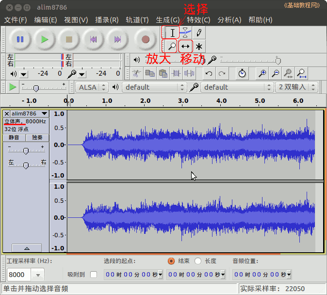
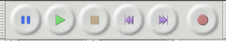
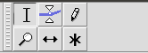
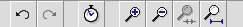
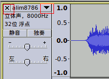
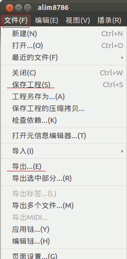

Audacity 音频编辑器教程
作者：TeliuTe 来源：基础教程网
基本操作 返回目录 下一课我们来学习 Audacity 的窗口和基本操作；
1、基本操作
1）启动 Audacity，点菜单”文件—打开“命令，打开一个音频文件，本课有练习文件(下载)；

2）播放工具栏可以播放、停止、暂停、跳至开头等操作；

3）选择工具栏可以选定、移动、放大显示一段音乐，按住Shift键变成缩小显示；

4）编辑工具栏可以复制、粘贴、裁剪一段音乐，还可以设成静音；
5）编辑工具栏中还可以放大、缩小音乐，可以放大选中片段或者显示整个音乐；

6）在音轨左边标签面板中，有删除按钮和下拉菜单按钮，可以将立体声分割成单声道；

7）在“文件”菜单中保存命令是保存工程文件，导出命令是保存音乐文件；

本节学习了 Audacity 操作的基础知识，如果你成功地完成了练习，请继续学习下一课内容；
本教程由86团学校TeliuTe制作|著作权所有
基础教程网：http://teliute.org/
美丽的校园……
转载和引用本站内容，请保留版权信息和本站链接。